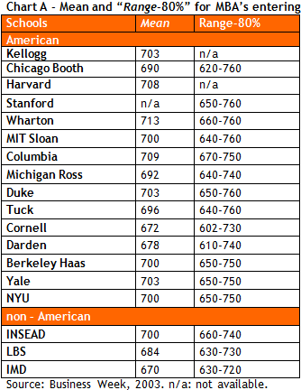
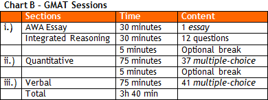
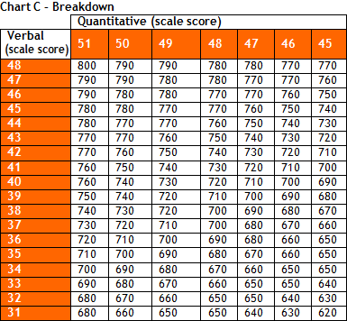

Can I ask you a favor before that? Read what five former students say about their preparation for this test. Read: GMAT Preparation Testimonials – 5 Personas.pdf.
I have read their answers. It is nice to look at the successful journey of your former students. I noticed that some had difficulty getting their 700+.
Each applicant has a different story to tell, but all of them faced the same obstacles.
Great. I felt relieved to see one of them get into Stanford with 680. I thought only 740+ were admitted there.
This is often a surprise, for the student naturally has difficulty understanding that the GMAT score is just one of infinite elements of this complex selection process, the MBA application.
I thought the guy who gets into Stanford is the one who spent one weekend preparing for the GMAT.
I’ve been helping students prepare for the GMAT for 12 years now and I have never seen anyone get a 700+ without working hard.
But we do hear some say “I bought the Official Guide and took two weekends to prepare”. What about them?
You know how it works: people love creating a myth around their own names, don’t they? (laughing)
But for some it must be actually easy.
Certainly some students hold a differentiated intellectual capacity. But even Thomas (The Idea Guy), whose score was 760, worked hard for two straight months. Once I taught this ITA guy who ranked first in his college entrance test, and I can guarantee you that his 770 demanded effort.
On the other hand, I heard some people spend one year on their preparation.
Well, applicants with sound foundation will need no more than four months of hard study.
But then why do we hear about people who study for the test for 6-8 months?
Two issues: (i.) bad initial diagnostic; (ii.) unfocused preparation. It is important, from day one, to have an action plan with measurable results. Many start to study without knowing beginning, middle, and end of the test preparation process.
Right, and there must also be personal factors influencing applicants.
Yes, the process affects their personal lives. Various factors, including low self-esteem, lack of confidence, and fear of failure, can influence their performance on the test. Unfortunately, several students will take too long to take the test simply because they have their doubts: “is it really worth attending an MBA?”
Sure. But it seems that the application process begins with the student’s concern about GMAT, right?
You are right. Whoever enters the process, even those who know it roughly, is aware of two “issues”: “get a 700 GMAT score” and “write a few so-called essays”.
And what is the great point regarding the GMAT, at least for those who are beginning the process now?
Well, the first thing is probably to understand why b-schools have this test among admissions criteria.
Good one... And why is it?
Admission Committees (AdCom) require the GMAT test with one simple objective: find good evidence of your condition to follow the academic demands during your MBA core course.
Core course?
Exactly, the most basic disciplines, foundation for the rest of your business school education. Although the curriculum can vary from school to school, students will usually be required to complete core courses. In general these courses happen in the first half/quarter of the program (just a note: some programs do not offer core courses).
In the remaining part of the program, students will take elective courses, is that it?
Exactly. Pearson, which manages the GMAT test, states that there is a linear relationship between test score and grades in the core courses (‘higher GMAT score, higher grades in core courses’). The GMAT score will not, however, tell whether you will succeed in an elective course.
I have seen people inform their GMAT score in their résumés.
The GMAT is an assessment tool of academic potential. I do not think the score should go on a résumé, but you know, people want to impress. I know some schools suggest that students inform a 740+ GMAT score on their résumés.
Ok, but are there other ways to evaluate the academic potential of an applicant?
Good question. It is important to understand that the GMAT is simply another factor that anticipates what your performance will be like in the program. Under the academic criteria or intellectual/analytical aspect there are also transcripts (we’ll discuss them later when we explore ‘Bureaucracy’), ok?
So even before we begin to study for the GMAT, should we understand the other variables involved in the academic dimension?
Yes, you should. From the beginning you must understand that each candidacy will be analyzed individually. Some will need 700+; others will succeed with 670.
I heard that foreign candidates are expected to perform high-above mean in the quantitative section of the GMAT.
The individual analysis of the GMAT components (quantitative e verbal) brings more revelations about the student’s profile than does the final score. Particularly, the quantitative score is evaluated within another context: in the case of international students, a higher quantitative than verbal score is preferable. But notice that those students who apply with a 700+ have done well in both sections.
I got it. So, in the end, thus, is the GMAT an equalizer?
The GMAT is an equalizer among the diverse schools – a grade 9 at FGV-EAESP is perhaps the same as a 6.5 at POLI-USP; thus, these references, grades, are best if standardized. Any b-school admission process analyzes three “dimensions” of an applicant – academic, professional, and personal.
Last year, during an info session, Stanford’s director of admission rushed to say that they have students whose score was 640. What’s your opinion?
A school’s representative, an admission committee member (AdCom), will always try not to raise any obstacles for potential applicants. It is necessary to analyze all variables involved in this process. As I said, many people felt surprised when, despite his 680, Stanford admitted him. However, few know that he was 8th in the general ranking at POLI and 2nd in Mechanics.
OK, I need to understand the determinant factors of success in the application, but why is there so much stress around the GMAT?
Well, basically because (i.) the vast majority of the admitted have high scores (700+), and (ii.) the applicant believes the GMAT is the only factor under his control during the MBA application process.
And you’re saying it is not?
Definitely it is not. The great factor under your control is your capacity to sell yourself to the committee.
Do you mean through the essays?
The essays are just one of the sale tools. Every year the relevance of interviews increases in the application process.
Truth is that competitive applicants will get 700+ on the GMAT. This is not a differentiator, but what if the guy gets a 770?
Without looking at the other criteria involved, I would say a 770 will work as well as 700.
Wow, this is news. Last year, a friend of mine retook the test and went from 710 to 740; he says the higher score helped him get admission to Wharton.
I do not know details of his application, so I cannot comment on that statement. But he probably wasted time, energy, and money taking the second GMAT.
But he emphasized that it was a determinant factor in his success.
It is really difficult to understand how he reached this conclusion. In principle, he is generalizing upon something very specific: his own case.
In the end, then, is a 700 enough?
As I said, we must look at several elements. One of the first things you should learn about this process is that there are no such things as ‘golden rules’. Each school has its criteria regarding the test, establishing a comfort zone for analysis. Typically, beyond looking at the number of admitted students, we should analyze the "range 80%" – between the 10% worst scores and the10% best scores (look at Chart A).

And what is the test like?
Take a look at the chart B.

And how do they come up with the so-called 700?
Take a look at the chart B. Check the chart C below how the scale scores of the two sections of the test (Verbal e Quantitative) compose the total score. There may be 10-point variation up or down. As an example, Quantitative (50) and Verbal (40) will usually form a 740 score, but can be 750 or 730. The scores of the essays (AWA) will not affect the GMAT overall score.

Megaron, what, in your view, is the great secret of the GMAT preparation?
I don’t think there is a ‘secret’, but contrary to what most people think, the test demands not analytical capacity but the combination of two capacities: (i.) identification of the pattern of questions (there are not many) and (ii.) good use of memory (practice) to rescue those patterns (item i.)
What do you mean? Can you expand on that?
The test does not ask you to solve a Math question in less than 2 minutes. Rather, the test wants you to solve the problem by identifying the question that presents the same pattern of questions you did for practice at home.
Therefore, the preparation requires a lot of practice.
Yes, the patterns are quite basic and predictable. Practice links item (i.) with item (ii.).
And how should I prepare for the test? Is it worth doing that on my own?
Self-awareness should help the applicant make a conscious decision. Despite their intellectual competence to prepare on their own, some people choose support, for they need someone demanding their discipline and commitment.
I will put some reflection upon the subject.
I should also remind you that some schools will take the GRE as evidence of academic capacity.
Wow, but it is not really worth it, for most schools will accept only the GMAT, right?
Right.
How do I register for the official GMAT?
Go to www.mba.com. Click on Register for the GMAT and fill out the fields on New User Registration. You must create your profile online and wait up to two days for confirmation. Then you can schedule your test. Thus, never leave it for the last minute.
Important:
(i.) Register at least 10 days prior to your intended test;
(ii.) Remember that Monday is the most desired day and so is the end of each month;
(iii.) The test center on Rua Helena, Vila Olimpia, Sao Paulo, offers 6 spots: only six tests are applied per day. In sum, schedule your test early enough to avoid any unpleasant surprise.
(ii.) Remember that Monday is the most desired day and so is the end of each month;
(iii.) The test center on Rua Helena, Vila Olimpia, Sao Paulo, offers 6 spots: only six tests are applied per day. In sum, schedule your test early enough to avoid any unpleasant surprise.